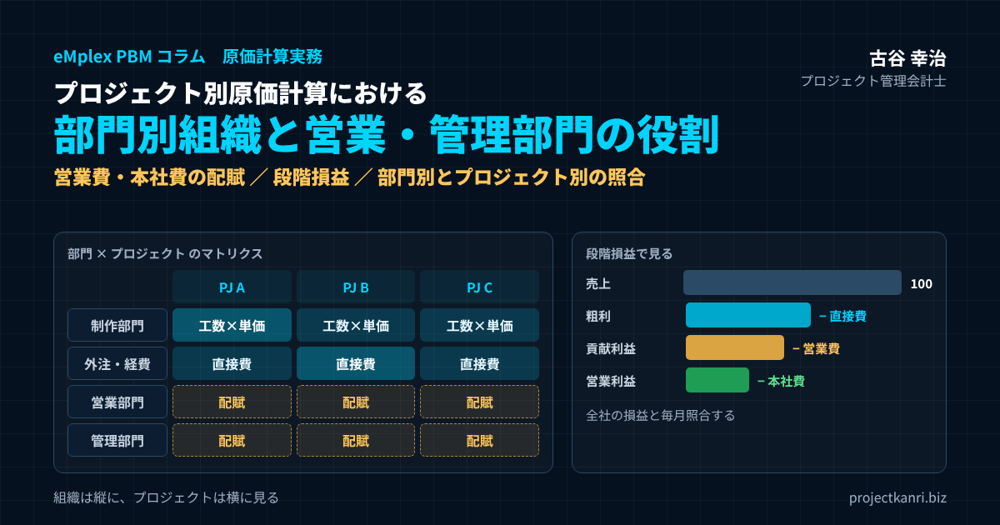

プロジェクト別原価計算における部門別組織と営業・管理部門の役割―営業費・管理費（本社費）の配賦方法と配賦基準、粗利・貢献利益・営業利益の段階損益、部門別損益とプロジェクト別損益の照合まで

結論：プロジェクト別原価計算は「横のプロジェクト」と「縦の部門」を一つの数字でつなぐこと
この記事の要点
- 三層：コストを直接費・部門費（営業・制作）・全社共通費（管理・本社）に分ける
- 段階損益：粗利 → 貢献利益（営業費控除後）→ 営業利益（本社費控除後）で見る
- 営業費：受注金額などを基準に配賦。評価は受注時の見込み粗利で
- 管理費：直接人件費・売上高など発生原因に近い基準で配賦し、年1回見直す
- 未稼働コスト：制作部門の待機・研修の人件費はプロジェクトに載せず部門の責任に
- 照合：プロジェクト別・部門別・全社の損益の一致を毎月確認する
プロジェクト管理会計士の古谷です。プロジェクト型のビジネスを営む会社のご支援に入ると、プロジェクト別の損益表はあるのに、その合計が決算書の営業利益と合わない、という場面に何度も出会います。理由の多くは単純で、営業部門と管理部門のコストが、どのプロジェクトにも載っていないのです。
プロジェクトは、案件という横串の単位です。一方で、会社の組織は、営業部門、制作部門、管理部門といった縦割りの部門でできています。人件費も家賃も、まずは部門に発生します。プロジェクト別原価計算とは、この縦の部門に発生したコストを、横のプロジェクトにどう対応づけるかを決める仕組みだと言い換えることができます。
本記事の結論は三つです。第一に、プロジェクトに直接ひもづくコストと、営業・管理部門のコストを分け、粗利、貢献利益、営業利益という段階で損益を見ること。第二に、営業費と管理費を配賦する場合は、その部門の役割に合った配賦基準を選び、毎年見直すこと。第三に、部門別損益とプロジェクト別損益を同じデータから作り、合計が全社の損益と一致することを毎月確かめることです。以下、順に解説します。
プロジェクト別原価計算と部門別組織はなぜ両輪なのか
プロジェクト別原価計算は、部門別の組織構造と組み合わせて初めて全社の損益と整合します。プロジェクトは横串、組織は縦割りで構成されており、両者を対応づける仕組みがなければ、プロジェクト別損益の合計が全社決算と食い違ってしまうためです。
営業部門・制作部門・管理部門という三つの部門がある会社を考えてみましょう。プロジェクトに直接ひもづくのは、制作部門の人がプロジェクトのために働いた時間の人件費、外注費、そのプロジェクトのためだけに使った経費が中心です。営業部門と管理部門のコストは、何らかの基準でプロジェクトに配分するか、あるいはプロジェクトの外で全社の費用として扱うかを決めなければ、全社コストの一部が宙に浮いてしまいます。
| 部門 | 主な役割 | プロジェクトとの関係 | コストの扱い |
|---|---|---|---|
| 制作部門（開発・施工・制作） | プロジェクトの遂行 | 直接関わる | 工数×時間単価で直接費に |
| 営業部門 | 受注・見積・契約・顧客の維持 | 受注の入口を担う | 部門費として配賦、または貢献利益で控除 |
| 管理部門 | 経理・財務・人事・総務・法務・情報システム | 全社の運営の基盤 | 本社費として配賦、または全社で控除 |
| 全社共通 | 役員・本社の家賃・全社システム | 特定できない | 本社費に含めて扱う |
ここで大切なのは、どの部門のコストを、プロジェクトに直接つけるのか、配賦するのか、配賦しないのかを、会社として明文化することです。担当者ごとの判断に任せると、同じ費用がある月はプロジェクトに入り、別の月は本社費に入るといったぶれが生じ、プロジェクト間の比較も、期間の比較もできなくなります。部門別のコスト構造を可視化することが、プロジェクト別採算管理の前提条件です。
もう一つ付け加えると、部門とプロジェクトの対応づけは、管理会計だけの話ではありません。上場の準備や金融機関への説明の場面では、プロジェクト別の利益と決算の利益がどうつながっているのかを説明できることが求められます。プロジェクト別損益の合計と全社の損益の差を、営業費、本社費、未稼働のコストといった項目で説明できれば、数字の信頼性は大きく高まります。
コストの三層構造：直接費・部門費・全社共通費
部門とプロジェクトの関係を整理するうえで、私はコストを三つの層に分けて考えることをお勧めしています。一つ目は、特定のプロジェクトのために発生したことがはっきりしている直接費です。二つ目は、特定の部門のために発生した部門費です。三つ目は、どの部門にも特定できない全社共通費です。
| 層 | 例 | プロジェクトへの対応 |
|---|---|---|
| 直接費 | プロジェクトの工数の人件費、外注費、案件専用の経費 | 直接つける |
| 部門費 | 営業部門の人件費・活動費、制作部門の未稼働の人件費 | 基準を決めて配賦、または部門で管理 |
| 全社共通費 | 管理部門の人件費、本社の家賃、役員報酬、全社システム費 | 本社費として配賦、または全社で管理 |
直接費は、プロジェクトに直接つけます。制作部門の人件費は、タイムシートで記録した工数に時間単価を掛けて、プロジェクトに直接つけるのが基本です。部門費は、まず部門に集計し、その部門の役割に合った基準でプロジェクトに配賦するかどうかを決めます。全社共通費は、本社の家賃や役員報酬、全社のシステム費などで、管理部門費とあわせて本社費として扱うことが一般的です。
この三層を分けておくと、損益も段階で見られるようになります。売上から直接費を引いたものが粗利、粗利から営業部門費を引いたものが貢献利益、さらに管理部門費と全社共通費を引いたものが営業利益です。段階ごとに見ることで、プロジェクトそのものの採算、営業活動の効率、会社全体の固定費の重さを、別々に議論できるようになります。
| 段階 | 計算 | 誰の責任か |
|---|---|---|
| 粗利 | 売上 − 直接費 | プロジェクトマネージャー |
| 貢献利益 | 粗利 − 営業部門費（配賦） | 営業とプロジェクトの共同 |
| 営業利益 | 貢献利益 − 管理部門費・全社共通費（配賦） | 経営 |
多くの会社で起きている混乱は、この段階を区別せずに、一つの利益率だけで議論していることから生まれます。現場は粗利で、経営は営業利益で話しているのに、どちらも「利益率」と呼んでいる。これでは議論がかみ合いません。会議の資料には、どの段階の利益かを必ず明記しましょう。
営業部門の役割とコストの扱い方
営業部門の人件費や活動費は、プロジェクトを受注するために発生した投資的なコストとして位置づけ、受注済みのプロジェクトに配分するのが一般的な考え方です。営業部門は特定のプロジェクトの遂行そのものには関わりませんが、その存在なしには案件は生まれないため、間接的なコストとしてプロジェクトが負担すべきだからです。
営業部門の役割は、受注を取ってくることだけではありません。見積を作り、契約の条件を決め、顧客との関係を維持し、追加の受注や次の案件につなげることまでが営業の仕事です。とくにプロジェクト型のビジネスでは、見積の段階で利益の大半が決まります。見積で想定した工数が甘ければ、どれだけ現場が努力しても利益は出ません。営業部門は、プロジェクトの採算の入口を担っているのです。
よく用いられる配賦の方法は、営業部門の年間コストを、その年に成約した案件の受注金額の総額で割って配賦率を算出し、各プロジェクトの受注金額にその配賦率を掛ける方法です。
| 項目 | 金額・計算 |
|---|---|
| 営業部門の年間コスト | 5,000万円 |
| 年間の受注金額の総額 | 10億円 |
| 配賦率 | 5,000万円 ÷ 10億円 ＝ 5% |
| 受注金額1億円のプロジェクト | 1億円 × 5% ＝ 500万円を配賦 |
受注金額を基準にする理由は、営業の労力がおおむね受注金額の大きさに比例すると考えられるからです。ただし、実際には小さな案件でも提案に手間がかかることや、既存顧客の継続案件はほとんど営業の労力がかからないことがあります。新規と継続で営業の負担が大きく違う会社では、新規案件と継続案件で配賦率を分ける、あるいは案件件数を基準に加えるといった工夫が考えられます。
もう一つ注意したいのが、失注した案件のコストです。営業部門は受注できなかった提案にも時間を使っています。受注金額で配賦すると、失注のコストは受注した案件が負担することになります。これは間違いではありませんが、失注が多いほど受注案件の負担が重くなることを、経営として理解しておく必要があります。営業コストをプロジェクトに適切に配分することで、営業活動の投資対効果も見えるようになります。
営業部門のコストには、人件費のほかに、交通費、接待交際費、展示会や広告の費用、提案のための資料の作成の外注費なども含まれます。特定の案件のための費用であることがはっきりしているもの、たとえば受注した案件の提案のために外注したデモの制作費は、そのプロジェクトの直接費にすることもできます。どこまでを直接費とするかを決めておけば、営業費の配賦の議論もぶれなくなります。
営業部門をどう評価するか：売上ではなく「受注時の粗利」で見る
営業部門の役割を正しく位置づけるには、評価の物差しも合わせて設計する必要があります。私がご支援先で最初に確認するのは、営業の目標が売上や受注金額だけになっていないかという点です。
受注金額だけで評価すると、営業は値引きをしてでも受注を取りにいきます。その結果、受注金額は伸びても、プロジェクトの粗利は下がり、現場は赤字のプロジェクトを抱えることになります。プロジェクト型のビジネスでは、営業の評価に受注時の見込み粗利、つまり実行予算ベースの粗利を加えることが大切です。
| 指標 | 見るポイント |
|---|---|
| 受注金額 | 量の指標。これだけで評価すると値引きを招く |
| 受注時の見込み粗利・粗利率 | 実行予算ベースの採算。営業の質を表す |
| 見込み粗利と実績粗利の差 | 見積・契約条件の甘さを振り返る材料 |
| 商談化率・受注率 | 営業活動の生産性 |
| 営業費÷受注粗利 | 営業の投資対効果 |
さらに一歩進めると、受注時の見込み粗利と、プロジェクト完了時の実績粗利の差を見ることができます。見積が甘かった案件、契約の範囲があいまいで追加の作業が増えた案件は、この差に表れます。差の原因が見積や契約の条件にあるなら、営業の側で改善できるテーマです。差を責めるのではなく、次の見積に活かすための情報として、営業と制作が一緒に振り返る場を設けることをお勧めします。
営業担当者ごとの商談化率や受注率、顧客ごとの取引の履歴を見ることも、営業部門の生産性を把握するうえで役に立ちます。営業部門のコストは、配賦して終わりではなく、そのコストに見合う粗利を生んでいるかを確かめることで、初めて経営の数字になります。
管理部門の役割とコストの扱い方
管理部門のコストは、直接人件費の額や売上高を基準に、全プロジェクトへ按分するのが実務上の標準的な方法です。管理部門は特定のプロジェクトを支援しているのではなく、全社の運営の基盤を支える役割を担っているため、公平な基準で全プロジェクトに薄く配分することが合理的だからです。
管理部門には、経理、財務、人事、総務、法務、情報システムなどが含まれます。請求書の発行と入金の確認、外注先への支払い、給与の計算、採用、契約書の確認、システムの運用。どれもプロジェクトが円滑に進むために欠かせない仕事ですが、特定のプロジェクトの成果物には直接表れません。
広く採用されている方法は、管理部門の年間コストを、全プロジェクトの直接人件費の合計で割って配賦率を求め、各プロジェクトの直接人件費に応じて按分する方法です。
| 項目 | 金額・計算 |
|---|---|
| 管理部門と全社共通費の年間コスト | 8,000万円 |
| 全プロジェクトの直接人件費の合計 | 4億円 |
| 配賦率 | 8,000万円 ÷ 4億円 ＝ 20% |
| 直接人件費4,000万円のプロジェクト | 4,000万円 × 20% ＝ 800万円を配賦 |
直接人件費を基準にする理由は、管理部門の仕事の多くが人に関わるものだからです。人が多く関わるプロジェクトほど、勤怠や給与、経費精算、社内の調整といった管理の負担が大きくなると考えられます。一方で、外注が中心のプロジェクトは、支払いや契約の管理の負担が大きくなります。外注の比率が高い会社では、直接人件費だけでなく、外注費を含めた直接原価や売上高を基準にするほうが実態に近いこともあります。
どの基準を選んでも、完全に正しい配賦はありません。大切なのは、管理部門のコストを見える化して初めて、プロジェクトが本当に会社に貢献しているかどうかの全体像が見えてくるということです。そのうえで、選んだ基準の理由を説明できるようにしておきましょう。
管理部門の費用の中にも、特定のプロジェクトのために発生したことが明らかな費用があります。たとえば、ある案件のためだけに弁護士に契約書の確認を依頼した費用や、案件のために取得した許認可の費用です。こうした費用は、管理部門の費用として配賦するのではなく、そのプロジェクトの直接経費として計上するほうが、採算の実態に近くなります。
管理部門は「コストセンター」で終わらない：管理部門の指標
管理部門は、売上を生まないコストセンターと呼ばれることがあります。しかし、プロジェクト型のビジネスにおいて、管理部門は利益を守る役割を担っています。私自身、財務の仕事からキャリアを始め、CFOとして上場準備にも携わってきましたが、管理部門の仕事の質は、会社の利益と資金に直結すると実感しています。
たとえば、請求の発行が遅れれば、入金が遅れ、資金繰りが苦しくなります。外注先との契約の確認が甘ければ、想定外の追加の費用が発生します。月次の締めが遅れれば、経営は古い数字で判断することになり、赤字のプロジェクトへの対応が遅れます。
| 指標 | プロジェクトへの影響 |
|---|---|
| 月次の締めの日数 | 早いほど赤字プロジェクトへの対応が早くなる |
| 請求の発行の遅れ | 入金の遅れ、資金繰りの悪化 |
| 売掛金の回収の状況 | 未回収の長期化、貸し倒れのリスク |
| 経費精算・支払いの処理の速さ | プロジェクトの原価の把握の遅れ |
| 管理部門費÷売上高 | 本社費の水準が事業規模に見合っているか |
管理部門のコストを配賦するなら、同時に、管理部門がそのコストに見合うサービスをプロジェクトに提供しているかを測る指標も持つべきです。月次の締めの日数、請求の発行の遅れ、売掛金の回収の状況、経費精算の処理の速さなどが代表的な指標です。管理部門費の売上高に対する比率を、毎年追いかけることも有効です。
プロジェクトの現場から「本社費が高すぎる」という声が出るのは、多くの場合、管理部門が何をしているのかが見えていないからです。管理部門の仕事を指標で示し、その費用がどのような基準で配賦されているかを説明できれば、現場の納得感は大きく変わります。
制作部門の未稼働コスト：プロジェクトに載らない人件費をどう扱うか
部門とプロジェクトの関係を考えるうえで、見落とされがちなのが制作部門の未稼働のコストです。制作部門の人の時間は、すべてがプロジェクトに使われるわけではありません。案件の合間の待機、社内の研修、提案の支援、社内の会議など、プロジェクトに直接つけられない時間が必ずあります。
プロジェクトに直接つけるのは、タイムシートで記録したプロジェクトの工数に時間単価を掛けた金額です。制作部門の人件費の総額から、プロジェクトに直接つけた金額を引いた残りが、未稼働のコストになります。
| 項目 | 金額 |
|---|---|
| 制作部門の人件費の総額 | 4億3,000万円 |
| プロジェクトに直接つけた人件費（工数×時間単価） | 4億円 |
| 未稼働のコスト（待機・研修・社内業務など） | 3,000万円 |
この未稼働のコストを、プロジェクトに配賦してしまうと、稼働率が低い月ほどプロジェクトの原価が高く見え、プロジェクトの採算と部門の稼働の問題が混ざってしまいます。私は、未稼働のコストはプロジェクトに配賦せず、制作部門の責任として部門の損益で見ることをお勧めしています。稼働率の改善は、プロジェクトマネージャーではなく、部門長が担うべきテーマだからです。
そのためには、時間単価を決めるときの前提の稼働率と、実際の稼働率を比較できるようにしておくことが大切です。過稼働の人と、案件に配置されていない人を早めに把握できれば、人の配置を見直し、未稼働のコストを減らすことができます。
時間単価の決め方：未稼働コストをどこに残すか
制作部門の人件費をプロジェクトの直接費にするには、時間単価が必要です。時間単価の決め方によって、未稼働のコストがプロジェクトに載るのか、部門に残るのかが変わります。ここは見落とされやすいものの、部門とプロジェクトの関係を決める重要な設計です。
| 方式 | 計算 | 時間単価 | 未稼働コストの行き先 |
|---|---|---|---|
| 所定の労働時間で割る | 720万円 ÷ 1,920時間 | 3,750円 | 部門に残る |
| 想定の稼働率（80%）で割る | 720万円 ÷ 1,536時間 | 約4,690円 | プロジェクトの原価に織り込まれる |
人件費には給与・賞与・法定福利費を含めます。数値は説明のための例です。
所定の労働時間で割る方式では、時間単価は低くなり、プロジェクトにつかなかった時間の人件費は、未稼働のコストとして部門に残ります。想定の稼働率で割る方式では、時間単価は高くなり、未稼働のコストの一部があらかじめプロジェクトの原価に織り込まれます。後者は見積の単価としては実務的ですが、実際の稼働率が想定と違えば、部門に差異が生じます。
本記事で、未稼働のコストを部門の責任として切り分けることをお勧めしたのは、所定の労働時間で割る方式を前提にしています。想定の稼働率で割る方式を採る場合は、想定と実績の稼働の差を「稼働差異」として部門の損益で見るようにすれば、同じ考え方で運用できます。どちらの方式を採るにしても、時間単価の計算の前提を文書にし、毎年見直すことが大切です。
数値例：三つのプロジェクトに営業費と管理費を配賦する
ここまでの考え方を、数値例で確かめてみましょう。年間の売上が10億円、営業部門の年間コストが5,000万円、管理部門と全社共通費をあわせた本社費が8,000万円の会社を想定します。年間の受注金額の総額は10億円、全プロジェクトの直接人件費の合計は4億円とします。説明を簡単にするため、受注した年に売上も計上されるものとします。
この場合、営業費の配賦率は5,000万円÷10億円で5%、管理費の配賦率は8,000万円÷4億円で20%です。この会社の三つのプロジェクトに当てはめると、次のようになります。
| 項目 | プロジェクトA | プロジェクトB | プロジェクトC |
|---|---|---|---|
| 売上（受注金額） | 10,000 | 3,000 | 2,000 |
| 直接人件費 | 4,000 | 1,500 | 600 |
| 外注費 | 2,500 | 500 | 1,000 |
| 直接経費 | 500 | 100 | 100 |
| 粗利（粗利率） | 3,000（30%） | 900（30%） | 300（15%） |
| 営業費の配賦（受注金額×5%） | 500 | 150 | 100 |
| 貢献利益 | 2,500 | 750 | 200 |
| 管理費の配賦（直接人件費×20%） | 800 | 300 | 120 |
| 営業利益（営業利益率） | 1,700（17%） | 450（15%） | 80（4%） |
数値は説明のための例です。
粗利率で見ると、プロジェクトAとBはどちらも30%で、Cは15%です。営業費と管理費を配賦した後の営業利益率は、Aが17%、Bが15%、Cが4%になります。AとBは粗利率が同じでも、直接人件費の比率が違うため、管理費の負担に差が出ています。Cは粗利の段階では黒字ですが、本社費を負担すると利益はほとんど残りません。
この結果から読み取るべきことは、Cのような案件が増えると、会社全体の固定費をまかなえなくなるということです。粗利だけを見ていると、Cも黒字の案件として受注を続けてしまいます。段階損益で見ることで、受注の判断に必要な粗利率の下限が見えてきます。この会社であれば、営業費5%と、直接人件費の比率に応じた管理費の負担を上回る粗利率がなければ、本社費を回収できません。
なお、実務では受注した年と売上を計上する年がずれることがよくあります。年をまたぐプロジェクトでは、営業費は受注した期の費用として扱い、管理費は売上を計上する期や工数が発生した期の費用として扱う、といったルールを決めておく必要があります。どちらの期の費用として扱うかを決めておかなければ、期ごとのプロジェクトの利益が比べられなくなるからです。
配賦基準の選び方で結果はこれだけ変わる
配賦の結果は、どの基準を選ぶかで変わります。先ほどの例で、管理費を直接人件費ではなく売上高で配賦した場合を比べてみましょう。売上高を基準にすると、配賦率は8,000万円÷10億円で8%になります。
| 項目 | プロジェクトA | プロジェクトB | プロジェクトC |
|---|---|---|---|
| 直接人件費÷売上 | 40% | 50% | 30% |
| 直接人件費基準（×20%）の配賦額 | 800 | 300 | 120 |
| 売上高基準（×8%）の配賦額 | 800 | 240 | 160 |
| 営業利益：直接人件費基準 | 1,700（17%） | 450（15%） | 80（4%） |
| 営業利益：売上高基準 | 1,700（17%） | 510（17%） | 40（2%） |
プロジェクトAは、売上高に対する直接人件費の比率が全社平均と同じ40%なので、どちらの基準でも負担は800万円で変わりません。直接人件費の比率が50%と高いBは、直接人件費を基準にすると負担が重くなり、外注の比率が高く直接人件費の比率が30%のCは、負担が軽くなります。売上高を基準にすると、その関係が逆転します。同じ会社の同じ数字でも、基準によってプロジェクトの営業利益は変わるのです。
| 配賦基準 | 向いているコスト | 注意点 |
|---|---|---|
| 受注金額 | 営業部門費 | 失注のコストも受注案件が負担する |
| 直接人件費・工数 | 人に関わる管理部門費 | 外注中心の案件は負担が軽くなる |
| 売上高 | 規模に比例する本社費 | 低粗利の大型案件の負担が重くなる |
| 人数・席数 | 家賃・人事・情報システム費 | 兼務・短時間の扱いを決める |
| 件数（請求・発注・契約） | 経理・購買・法務の費用 | 件数の集計に手間がかかる |
配賦基準を選ぶときの原則は、そのコストが発生する原因に最も近い指標を選ぶことです。人に関わる管理の負担なら人数や直接人件費、取引の件数に関わる負担なら請求件数や発注件数、売上の規模に比例する負担なら売上高が候補になります。そして、一度決めた基準は、少なくとも一年間は変えないことです。期の途中で基準を変えると、月ごとの比較ができなくなります。
部門別損益とプロジェクト別損益を照合する
プロジェクト別原価計算の仕組みが正しく動いているかを確かめる最も確実な方法は、プロジェクト別損益の合計と、部門別損益の合計と、全社の損益が一致することを毎月確認することです。一致しない場合、どこかにプロジェクトにも部門にも載っていないコストがあるか、二重に計上されているコストがあります。
先ほどの会社の年間の数字で、照合の表を作ってみます。制作部門の人件費の総額を4億3,000万円とし、そのうち4億円をプロジェクトに直接つけ、3,000万円が未稼働のコストとして残ったとします。
| 項目 | 金額 | 備考 |
|---|---|---|
| 全プロジェクトの売上 | 100,000 | ＝全社の売上 |
| 全プロジェクトの直接原価 | 70,000 | 工数の人件費4億円を含む |
| 全プロジェクトの粗利 | 30,000 | 粗利率30% |
| 営業費の配賦の合計 | 5,000 | 営業部門費を全額配賦 |
| 管理費の配賦の合計 | 8,000 | 本社費を全額配賦 |
| プロジェクト別の営業利益の合計 | 17,000 | |
| 制作部門の未稼働のコスト | 3,000 | プロジェクトに配賦しない |
| 全社の営業利益 | 14,000 | ＝決算の営業利益と一致 |
全プロジェクトの直接原価は7億円、粗利は3億円です。営業費5,000万円と本社費8,000万円をすべて配賦すると、プロジェクト別の営業利益の合計は1億7,000万円になります。ここから、プロジェクトに配賦しなかった制作部門の未稼働のコスト3,000万円を引くと、全社の営業利益1億4,000万円と一致します。
照合の表を毎月作ると、配賦の漏れや二重計上にすぐ気づけるだけでなく、プロジェクトの採算の問題と、部門の稼働の問題を、分けて議論できるようになります。プロジェクトの営業利益が予定どおりでも、全社の利益が足りないなら、問題は未稼働のコストや本社費の水準にあることが分かります。
配賦する・しないの判断：貢献利益で評価するという選択
ここまで配賦の方法を解説してきましたが、すべての会社が営業費や管理費をプロジェクトに配賦すべきとは限りません。配賦をせずに、プロジェクトは粗利または貢献利益までで評価し、本社費は全社で別に管理するという選択もあります。
| 観点 | 全額配賦する | 配賦せず貢献利益までで見る |
|---|---|---|
| プロジェクトの評価 | 営業利益で評価 | 粗利・貢献利益で評価 |
| 現場の納得感 | 配賦率の変動に左右され下がりやすい | コントロールできる範囲で高い |
| 本社費の回収の見え方 | プロジェクトごとに見える | 全社でしか見えない |
| 向いている用途 | 受注判断・価格設定・事業撤退の判断 | プロジェクトマネージャーの業績評価 |
配賦をしない方式の長所は、プロジェクトマネージャーが自分でコントロールできる範囲の数字だけで評価されることです。本社費の配賦率が変わってプロジェクトの利益が下がっても、プロジェクトマネージャーにはどうすることもできません。コントロールできない数字で評価されると、現場の納得感は下がります。
一方で、配賦をしないと、プロジェクトが本社費を回収できているかが見えにくくなります。そこで私がお勧めしているのは、評価は粗利または貢献利益で行い、受注の判断と価格の設定には本社費を含めた営業利益を使う、という使い分けです。プロジェクトマネージャーの評価と、経営の意思決定とで、見る段階を分けるのです。
どちらの方式を選ぶにしても、粗利率の目標は、本社費を回収できる水準から逆算して決める必要があります。先ほどの例なら、全社の粗利3億円から未稼働のコストと営業費と本社費を引いて、目標の営業利益が残るかどうかを確かめます。粗利率の目標の根拠を示せることが、配賦の議論を前に進める鍵です。
受注判断と価格設定への活かし方：必要な粗利率を逆算する
部門別とプロジェクト別の原価計算を整える最大の目的の一つは、受注の判断と価格の設定に使うことです。見積を作るときに、直接費だけを積み上げて利益を少し乗せる、という方法では、営業費と本社費を回収できるかどうかが分かりません。
そこで、全社の数字から、プロジェクトに必要な粗利率を逆算します。先ほどの会社では、年間の売上10億円に対して、営業費が5,000万円、本社費が8,000万円、制作部門の未稼働のコストが3,000万円で、合計1億6,000万円の固定的な費用があります。目標の営業利益を売上の10%の1億円とすると、粗利で2億6,000万円、つまり粗利率26%が全社として必要な水準になります。
| 項目 | 金額 | 売上比 |
|---|---|---|
| 売上 | 100,000 | 100% |
| 営業費 | 5,000 | 5% |
| 本社費（管理部門・全社共通） | 8,000 | 8% |
| 制作部門の未稼働のコスト | 3,000 | 3% |
| 目標の営業利益 | 10,000 | 10% |
| 必要な粗利 | 26,000 | 26% |
必要な粗利率＝（営業費＋本社費＋未稼働コスト＋目標営業利益）÷売上
この26%は、全社の平均として必要な水準です。個々のプロジェクトでは、戦略的に低い粗利率で受注することもあるでしょう。新しい顧客との最初の取引や、新しい分野の実績づくりなどです。その場合も、必要な水準を下回る案件であることを経営が理解したうえで、意図して受注することが大切です。逆算した粗利率を見積の承認の基準に組み込めば、営業部門と制作部門が同じ物差しで受注の可否を議論できるようになります。
より精緻にするなら：活動基準原価計算（ABC）の考え方
管理部門のコストをより実態に近く配分したい場合に参考になるのが、活動基準原価計算、いわゆるABCの考え方です。ABCでは、管理部門の仕事を、請求、支払い、契約の確認、採用といった活動に分け、それぞれの活動の量に応じてコストを配分します。
| 管理部門の活動 | コストドライバー（配分の基準） |
|---|---|
| 請求・入金の確認 | 請求件数 |
| 外注先への支払い | 支払件数・発注件数 |
| 契約書の確認 | 契約件数 |
| 採用・労務 | 人数・入社人数 |
| 情報システムの運用 | 利用者数 |
たとえば、請求の業務にかかるコストを請求の件数で、支払いの業務にかかるコストを支払いの件数で、契約の確認にかかるコストを契約の件数で配分します。小さな取引を大量に抱えるプロジェクトは、金額は小さくても管理の負担が大きいことが、数字で見えるようになります。
ただし、ABCは活動ごとの時間や件数を把握する手間がかかります。中堅・中小企業がいきなり全面的に導入するのは現実的ではありません。私は、まず直接人件費や売上高といった単純な基準で配賦を始め、負担の偏りが大きいと感じる活動だけを、件数を基準に切り出すという段階的な進め方をお勧めしています。精緻さよりも、継続して毎月運用できることのほうが、はるかに大切です。
部門別組織の設計とプロジェクトコードの対応関係
部門別組織とプロジェクトコードは、それぞれ別の軸として設計し、両方の切り口で損益を見られるようにしておくことが望ましい設計です。部門別損益だけを見ていると、どのプロジェクトが儲かっているかが分からず、逆にプロジェクト別損益だけを見ていると、どの部門が全体をけん引しているかが見えなくなるためです。
同じ制作部門に所属する二人のプロジェクトマネージャーが、それぞれ別のプロジェクトを担当している場合、部門別損益では合算されて見えなくなる個々のプロジェクトの採算を、プロジェクトコード別の集計で補完する必要があります。反対に、一つのプロジェクトに複数の部門の人が関わる場合は、プロジェクトの原価を部門ごとに分解して見ることで、どの部門の工数が予算を超えているかが分かります。
| 部門 | プロジェクトA | プロジェクトB | プロジェクトC | 部門合計 |
|---|---|---|---|---|
| 制作1部（開発） | 3,000 | 1,200 | 400 | 4,600 |
| 制作2部（デザイン） | 1,000 | 300 | 200 | 1,500 |
| 外注費・直接経費 | 3,000 | 600 | 1,100 | 4,700 |
| プロジェクト合計 | 7,000 | 2,100 | 1,700 | 10,800 |
縦に読むとプロジェクトの原価、横に読むと部門の原価になります。
このマトリクスの集計を可能にするには、原価のデータを記録するときに、プロジェクトと部門の両方が分かるようにしておくことが必要です。工数であれば、誰が、どのプロジェクトに、何時間使ったかを記録すれば、その人の所属部門から部門の軸が決まります。外注費や経費であれば、発注や支払いの依頼の段階で、プロジェクトと費用を負担する部門を指定します。
コード体系の設計では、部門のコードとプロジェクトのコードを混ぜないことが大切です。プロジェクトのコードに部門の番号を埋め込む会社がありますが、組織の変更のたびにプロジェクトのコードの意味が変わってしまいます。部門は組織の変更で変わるもの、プロジェクトは案件の開始から終了まで変わらないもの、と分けて管理しましょう。マトリクス型の集計を可能にする組織設計とコード体系の整備が、多角的な採算の把握の鍵になります。
マトリクスの表は、縦に読むか横に読むかで、責任者が変わります。縦に読んだプロジェクトの合計はプロジェクトマネージャーの責任、横に読んだ部門の合計は部門長の責任です。一つの表を、二人の責任者がそれぞれの立場で見ることで、プロジェクトの予算の超過が、特定の部門の工数の超過から生じているのか、外注費の増加から生じているのかを、具体的に特定できるようになります。
兼務者と組織変更：数字がずれる二つの落とし穴
部門とプロジェクトの二軸の管理で、実務上つまずきやすいのが兼務者の扱いです。プロジェクト型の会社では、プロジェクトマネージャーが営業も担う、制作部門の人が提案の支援をする、管理部門の人がプロジェクトの事務を担うといった兼務がよくあります。
兼務者の人件費を、所属部門だけに計上すると、部門の数字が実態とずれます。たとえば、営業を兼ねるプロジェクトマネージャーの人件費がすべて制作部門に入っていれば、営業のコストは小さく見え、制作部門の未稼働のコストは大きく見えます。兼務者は、タイムシートで仕事の内容ごとに時間を記録し、プロジェクトの工数、営業活動の工数、社内の業務の工数に分けて計上することが基本です。
| 仕事の内容 | 時間 | 計上先 |
|---|---|---|
| プロジェクトAの管理 | 100時間 | プロジェクトAの直接費 |
| 新規案件の提案・見積 | 40時間 | 営業部門費 |
| 部内の会議・育成 | 20時間 | 制作部門の未稼働のコスト |
もう一つの落とし穴は、期の途中の組織の変更です。部門の統合や分割があると、前年や前月の部門別の数字と比較できなくなります。組織の変更があった場合は、変更前の数字を新しい組織に組み替えた比較表を用意するか、少なくとも変更の時期と内容を注記として残しておきましょう。人の異動も同様で、異動の前後でどの部門に人件費が計上されているかを、月単位で確認できるようにしておくことが大切です。
組織形態ごとの部門とプロジェクトの関係
部門とプロジェクトの関係は、会社の組織形態によっても変わります。代表的な三つの形態を比べてみましょう。
| 組織形態 | 特徴 | 論点 |
|---|---|---|
| 機能別組織 | 営業・制作・管理が独立した部門 | プロジェクトの採算の責任者を明確にする |
| 事業部制組織 | 事業部が営業と制作を持つ | 管理部門費の事業部への配賦基準 |
| マトリクス組織 | 職能の部門に所属しプロジェクトに配置 | 部門長＝稼働、PM＝採算の責任分担 |
機能別組織では、営業、制作、管理がそれぞれ独立した部門になっており、プロジェクトは部門をまたいで進みます。部門の責任は機能ごとに明確ですが、プロジェクトの採算の責任者があいまいになりやすいのが課題です。プロジェクトマネージャーに採算の責任を持たせ、プロジェクト別損益で評価する仕組みが必要になります。
事業部制組織では、事業部ごとに営業と制作を持ち、事業部長が事業部の損益に責任を持ちます。事業部の損益とプロジェクト別損益の関係が分かりやすい一方で、管理部門の費用を事業部にどう配賦するかが議論の中心になります。事業部長が配賦基準に納得していなければ、事業部の業績の評価が形だけのものになってしまいます。
マトリクス組織では、人は職能の部門に所属しながら、プロジェクトに配置されて働きます。部門長は人の育成と稼働に、プロジェクトマネージャーはプロジェクトの採算に責任を持ちます。先ほどの未稼働のコストを部門の責任、プロジェクトの粗利をプロジェクトマネージャーの責任とする考え方は、このマトリクス組織で特に有効です。どの形態でも、誰がどの数字に責任を持つのかを明確にすることが、プロジェクト別原価計算を経営に活かす前提です。
業種による違い：建設・IT・コンサル・映像制作
部門とプロジェクトの関係や、営業費・管理費の重さは、業種によって異なります。私がご支援してきた業種ごとの特徴を整理すると、次のようになります。
| 業種 | 原価の特徴 | 管理費の配賦基準の例 | 重点 |
|---|---|---|---|
| 建設業 | 外注費・材料費の比率が高い | 売上高・完成工事原価 | 現場社員と工事部の人件費の区分 |
| IT・ソフトウェア開発 | 社員の人件費が中心 | 直接人件費・工数 | 工数記録の精度と未稼働の管理 |
| コンサルティング | 社員の人件費が中心 | 直接人件費・工数 | 稼働率と時間単価 |
| 映像・広告制作 | 外部スタッフ・機材費が大きい | 売上高・直接原価 | 兼務者（営業とプロデューサー）の工数 |
建設業では、外注費の比率が高く、現場の経費も大きいため、管理費の配賦は売上高や完成工事原価を基準にすることが多くなります。工事の現場に常駐する社員の人件費は直接費、工事部の部長や工務の担当者の人件費は部門費として、どこまでを工事原価に含めるかを決めておく必要があります。
IT・ソフトウェア開発やコンサルティングでは、原価の大半が社員の人件費です。工数の記録の精度がそのまま採算の精度になり、管理費の配賦も直接人件費や工数を基準にするのが自然です。未稼働のコストの管理が、利益を大きく左右します。
映像制作や広告制作では、外部のスタッフや機材の費用が大きく、案件ごとの変動も大きいのが特徴です。営業とプロデューサーの役割が重なることも多く、兼務者の工数の分け方が特に重要になります。業種の特徴に合わせて、配賦基準と管理の重点を選んでください。
配賦基準が古いままだと起きる問題
営業・管理部門の配賦基準を一度決めたまま長年見直さずにいると、事業構造の変化に伴って配賦結果が実態と乖離していきます。事業の成長段階によって営業活動の重さや管理部門の負担は変化するため、固定的な配賦基準では実態を反映できなくなるからです。
創業期に決めた配賦基準を10年近く据え置いていた会社で、新規事業のプロジェクトに旧事業と同じ配賦率を適用した結果、実態よりも過大なコスト負担が新規事業にのしかかり、撤退の誤った判断につながりかけたケースがありました。配賦の数字は、それ自体が正しいかのように一人歩きします。その前提が古くなっていないかを確かめるのは、経営管理を担う部門の大切な仕事です。
| 確認項目 | 見るポイント |
|---|---|
| 営業部門・管理部門の費用の内訳 | 増えた費用の原因は何か |
| 事業ごとの営業の負担 | 新規中心か継続中心か |
| 事業ごとの管理の負担 | 取引件数・人数・外注比率の変化 |
| 新規事業の扱い | 立ち上げ期の負担を軽くする特例が必要か |
| 変更の影響 | 各事業・プロジェクトの利益がどれだけ動くか |
配賦基準は、少なくとも年に一度、予算を作るタイミングで見直しましょう。見直しのときは、営業部門と管理部門の費用の内訳、事業ごとの営業の負担や管理の負担の変化、外注の比率や人員の構成の変化を確認します。基準を変えた場合は、変更の理由と、変更による各事業やプロジェクトへの影響の大きさを、経営会議で共有することが大切です。
新規事業については、立ち上げの時期だけ本社費の配賦を軽くする、あるいは貢献利益までで評価するといった特例を設ける会社もあります。特例を設けること自体は合理的ですが、期限と、通常の配賦に戻す条件を決めておくことが欠かせません。特例が恒久化すると、今度は既存事業が新規事業の本社費を負担し続けることになるからです。
よくある失敗と対策
部門別組織とプロジェクト別原価計算の運用で、私がご支援の現場でよく目にする失敗を整理しておきます。
| 失敗 | 起きること | 対策 |
|---|---|---|
| 営業・管理の費用を誰も負担しない | プロジェクト損益の合計と決算が合わない | 三層で区分し、配賦か全社控除かを明文化 |
| 粗利と営業利益を区別しない | 現場と経営の議論がかみ合わない | 段階損益で、どの段階かを明記 |
| 未稼働の人件費をプロジェクトに配賦 | 採算の問題と稼働の問題が混ざる | 部門の責任として切り分ける |
| 配賦基準を長年見直さない | 新規事業などの採算を誤って判断 | 年1回、予算策定時に見直す |
| 兼務者を所属部門だけに計上 | 営業費が小さく、未稼働が大きく見える | タイムシートで仕事ごとに記録 |
| 部門コードをプロジェクトコードに埋め込む | 組織変更でコードの意味が変わる | 部門とプロジェクトを別の軸で管理 |
いずれの失敗にも共通しているのは、数字を作る仕組みが部門ごとにばらばらになっていることです。営業は営業の表、制作はプロジェクトの表、経理は会計のシステムで、それぞれ別に数字を作っていれば、照合のたびに差が見つかり、その原因を探すだけで月次の会議の準備が終わってしまいます。
月次の経営会議でどう見せるか
部門別とプロジェクト別の数字は、作るだけでなく、経営会議で使われて初めて意味を持ちます。私がお勧めしている月次の資料の構成は、全社の段階損益、部門別損益、プロジェクト別損益の一覧、そして照合の表の四つです。
全社の段階損益では、粗利、貢献利益、営業利益を予算と比べ、どの段階で差が出ているかを確認します。粗利で差が出ていればプロジェクトの問題、粗利は予定どおりで営業利益で差が出ていれば、営業費や本社費、未稼働のコストの問題です。この切り分けを最初に行うことで、会議の議論が的を外さなくなります。
プロジェクト別損益の一覧では、すべてのプロジェクトを並べるのではなく、予算からの乖離が大きいもの、着地の見込みが悪化したものを上位に並べます。部門別損益では、部門長が稼働率と未稼働のコストを説明します。数字の責任者が、自分の数字を自分の言葉で説明する場をつくることが、部門とプロジェクトの二軸の管理を定着させる一番の近道です。
実体験：エンプレックス時代の部門別・プロジェクト別のマトリクス管理
私がエンプレックスでCFOを務めていた頃、営業部門・開発部門・管理部門という縦割りの組織構造と、プロジェクトごとの採算というマトリクスの両方を同時に見える化する必要に迫られました。当初は部門別のP/Lしか整備されておらず、どの部門も「自分たちは頑張っている」と主張する一方で、実際に利益を生んでいるプロジェクトがどれかを特定できずにいました。
部門別のP/Lだけでは、営業部門は受注金額が伸びていることを、開発部門は稼働が高いことを、それぞれ成果として語ります。しかし、どちらも正しいのに、会社の利益は思うように伸びない。その原因を探るには、受注した案件ごとに、見積の段階でどれだけの利益を見込み、実際にどれだけの工数がかかり、最終的にどれだけ残ったのかを追いかける必要がありました。
上場準備を進めるなかで、月次の数字を早く確定させ、予算と実績の差を説明できることも求められました。部門の数字とプロジェクトの数字が別々に作られていると、その説明に時間がかかります。プロジェクトバジェット・マネジメントシステムの原型は、この部門とプロジェクトの二軸を、一つのデータで両立させる必要性から生まれたものです。
この経験から私が学んだのは、部門の数字とプロジェクトの数字は対立するものではなく、同じ事実を別の角度から見ているにすぎない、ということです。営業も開発も管理も、同じ一つのデータを見て話せるようになったとき、部門間の議論は「誰が頑張っているか」から「どのプロジェクトをどう良くするか」へと変わっていきました。独立後に200社を超える会社をご支援してきましたが、この変化は業種を問わず共通しています。
導入のステップ：部門別×プロジェクト別の原価計算を始める順番
これから部門別とプロジェクト別の原価計算を整える会社に向けて、私がお勧めしている進め方をまとめます。
| ステップ | やること |
|---|---|
| 1. 区分を決める | 直接費・部門費・全社共通費の一覧を作る |
| 2. 工数を記録する | タイムシートでプロジェクトごとの工数を記録し、時間単価を決める |
| 3. 粗利まで出す | プロジェクト別損益を粗利まで毎月作る |
| 4. 照合する | 部門別損益・全社損益との一致を毎月確認する |
| 5. 配賦を加える | 営業費・管理費の配賦基準を決め、段階損益で見る |
| 6. 見直す | 年1回、配賦基準と粗利率の目標を見直す |
最初の一歩は、コストの三層の区分を決めることです。どの費用を直接費とし、どの費用を部門費、全社共通費とするかを一覧にします。次に、制作部門の人の工数を、タイムシートでプロジェクトごとに記録する仕組みを整えます。工数の記録がなければ、プロジェクトの直接人件費が分からず、管理費の配賦の基準も作れません。
そのうえで、粗利までのプロジェクト別損益を毎月作り、部門別損益との照合を始めます。照合が安定してから、営業費と管理費の配賦を加え、段階損益で見るようにします。最初から精緻な配賦を目指すより、まずは粗利の段階で数字が毎月正しく出ることを優先してください。配賦は、その上に積み重ねるものです。
eMplex PBMによる部門別・プロジェクト別の二軸管理
プロジェクト管理の仕組みには、部門別の集計とプロジェクト別の集計を、同じデータから作れることが求められます。別々のシステムやExcelで部門別とプロジェクト別を管理していると、数字の整合性を取るだけで多大な労力がかかるためです。
私たちが提供しているeMplex PBMでは、売上、労務費、外注費、直接経費をプロジェクトごとに管理し、事業別・プロジェクト別の収支レポートで損益を確認できます。フォーキャストレポートでは、着地見込みを案件種別、取引先、部署といった切り口でドリルダウンできます。タイムシートの工数は労務費の原価に連携するため、制作部門の人件費をプロジェクトの直接費として積み上げる土台になります。過稼働や未配置のアラートは、本記事で触れた未稼働のコストを部門長が管理するうえでも役に立ちます。
営業の側では、商談化率や受注率といった営業担当者の生産性を見ることができ、月次では仮締めと本締めの二段階のロックで数字を確定させ、財務会計の仕訳データとして出力できます。営業、制作、管理の三つの部門が、一つのデータ基盤で同じ数字を見ることが、意思決定のスピードを大きく左右すると私は考えています。
まとめ：組織は縦に、プロジェクトは横に見る
営業・管理部門のコストをどう扱うかを決めないまま、プロジェクト別原価計算だけを精緻化しても、全社の損益との整合性は取れません。コストを直接費、部門費、全社共通費の三層に分け、粗利、貢献利益、営業利益の段階で損益を見ること。営業費と管理費は、それぞれの役割に合った基準で配賦し、基準は毎年見直すこと。制作部門の未稼働のコストは部門の責任として切り分けること。そして、部門別損益とプロジェクト別損益の合計が全社の損益と一致することを、毎月確かめること。
部門とプロジェクトという二つの軸を両立させて初めて、経営に役立つ採算管理が実現します。組織は縦に、プロジェクトは横に見る、という視点の使い分けが、プロジェクト管理会計の基本の姿勢です。まずは自社のコストを三層に分けるところから始めてみてください。
よくある質問（FAQ）
Q. プロジェクト別原価計算で、営業部門のコストはどう扱いますか？
A. 受注のための投資的なコストとして、受注金額などを基準にプロジェクトへ配賦するのが一般的です。営業部門の年間コスト÷年間の受注金額の総額で配賦率を求め、各プロジェクトの受注金額に掛けます。新規と継続で営業の負担が大きく違う場合は、配賦率を分けることも検討します。
Q. 管理部門の費用（本社費）の配賦基準には何を使えばよいですか？
A. 直接人件費、売上高、人数などが代表的です。管理の負担が人に比例するなら直接人件費や人数、取引の規模に比例するなら売上高が候補になります。コストが発生する原因に最も近い指標を選び、期中は変えず、年に一度見直します。
Q. 営業費や本社費は、必ずプロジェクトに配賦すべきですか？
A. 必須ではありません。プロジェクトマネージャーの評価は自分でコントロールできる粗利や貢献利益で行い、受注の判断や価格の設定には本社費を含めた営業利益を使う、という使い分けが実務的です。いずれの場合も、粗利率の目標は本社費を回収できる水準から逆算します。
Q. プロジェクト別損益の合計が全社の損益と合いません。原因は何ですか？
A. 多くの場合、どのプロジェクトにも配賦されていない営業費・管理費、プロジェクトにつかなかった制作部門の未稼働の人件費、または二重計上が原因です。プロジェクト別、部門別、全社の三つの損益を照合する表を毎月作ると、差の原因を特定しやすくなります。
Q. 制作部門の待機時間や研修時間の人件費はどう扱いますか？
A. プロジェクトに配賦せず、制作部門の未稼働のコストとして部門の損益で見ることをお勧めします。プロジェクトの採算の問題と、部門の稼働の問題を分けて議論できるようになり、稼働率の改善の責任も部門長に明確になります。
Q. 活動基準原価計算（ABC）は導入すべきですか？
A. 精緻な配賦には有効ですが、活動ごとの件数や時間の把握に手間がかかります。まずは直接人件費や売上高などの単純な基準で始め、負担の偏りが大きい活動だけを件数基準で切り出す段階的な導入が現実的です。